Мы обсудили, как ИИ выявляет закономерности из потока фактов. Второй задачей ИИ
является сборка сложного из простого. Это значит, что нужно определить конструктор простых
элементов, из которых комбинированием будет создаваться всё сущее. Такие конструкторы нужны для
речевых, графических, математических конструкций. ИИ разговаривает с нами на языке — пикселей,
линий, областей, тел, букв, слогов, слов, предложений, текстов, представляя всё это как математические
конструкции. Рассмотрим несколько примеров.
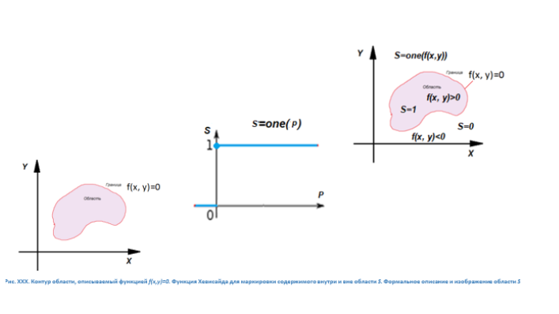
Пример 1. Плоские графические изображения, составленные из областей и их границ как логическая
сборка типовых элементов. Примем в качестве элементарных фигуры, изображённые на рисунке. Линия контура
двухмерной фигуры описывается функцией f(x,y)=0, связывающей значения координат (x,y) её точек.
Область внутри контура представлена неравенством, которое выполняется при подстановке соответствующих значений
координат любой точки внутри контура.
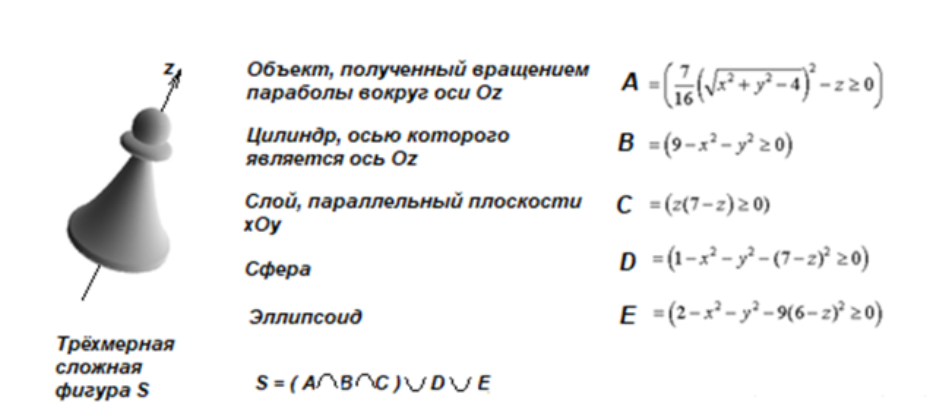
Оливер Хэвисайд предложил ввести в математику единичную функцию y=one(x), которая
при x<0 равна нулю, а при x>=0 равна единице. Хэвисайд придумал эту функцию для
того, чтобы описать в электрических схемах работу выключателя: y=0 — ключ разомкнут,
y=1 — ключ замкнут. В последствии, функция, соединяющая непрерывную область допустимых значений
аргумента x с дискретной областью определения y, оказалась очень полезной в физике,
технике, информатике.
Уравнение окружности радиусом R с центром (x0,y0) имеет вид:
(x-x0)²+(y-y0)²=R². Координаты точек, лежащих внутри окружности, удовлетворяют неравенству:
(x-x0)²+(y-y0)² < R². Выражение R²-(x-x0)²-(y-y0)² > 0 выполняется для всех
точек внутри окружности. Функция Z=one(R²-(x-x0)²-(y-y0)²) возвращает 1, если точка принадлежит
внутренней области круга или её границе, и возвращает 0, если точка находится вне круга. При этом из записи
исчезло неравенство, и теперь с двухмерной областью можно работать как с обычной функцией. В таблице вы видите
несколько графических областей-примитивов и их описания в виде как неравенств, так и функций.
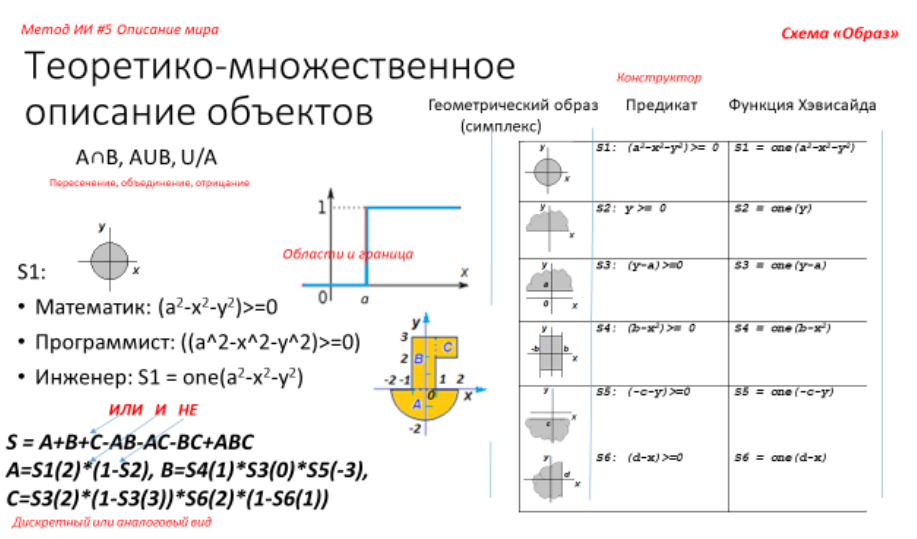
Над геометрическими областями можно производить действия. Для того чтобы образовать любую сколь угодно сложную
фигуру из примитивов, достаточно трёх основных действий: объединения,
пересечения и вычитания областей.
Объединение двух фигур G(x,y) и H(x,y) в одну V(x,y) описывается формулой
V(x,y)=G(x,y)+H(x,y)-G(x,y)*H(x,y). В обыденной речи объединение передаётся союзом ИЛИ.
V равно 1, если точка принадлежит или области G, или области H, или обеим
вместе.
Пересечение двух фигур G(x,y) и H(x,y) описывается V(x,y)=G(x,y)*H(x,y). В
обыденной речи пересечение передаётся союзом И. V равно 1, если точка принадлежит как области
G, так и области H.
Операция вычитания (отрицания). Точка не принадлежит области G(x,y), если выражение
V(x,y)=1-G(x,y) для заданных (x,y) равно 1. В обыденной речи отрицание передаётся
частицей НЕ или предлогом БЕЗ.
На рисунке показан цифровой двойник, описывающий сложную фигуру «Золотой ключик», составленную из заявленных
примитивов. Общим случаем представленного подхода являются функции В.Л. Рвачёва.
Задания
- Нарисуйте сложную двухмерную геометрическую фигуру из замкнутых ломаных прямых и дуг окружностей. Разбейте ее на примитивы. Составьте формулу ее цифрового
двойника, используя неравенства и функцию Хэвисайда.
- Загрузите с сайта упражнения «Построение геометрического двойника». Задайте геометрическую область. Посмотрите, как компьютер разобьет ее на составные части.
- Для заданной геометрической области и конструктора примитивов составьте в компьютере формулу этой области. Проверьте формулу на корректность,
испытывая ее указателем мышки в различных точках.
- Измените ползунками параметры отдельных частей фигуры, посмотрите как изменится форма и формула фигуры.
- Загрузите упражнение с сайта «Эллипс Ламе». Задавая его параметры с клавиатуры, посмотрите как меняется контур фигуры.
- Подберите себе трехмерную фигуру из окружающих вас предметов. Разбейте мысленно ее на элементы. Запишите формулу ее двойника.
Проверьте формулу, подставляя значения координат различных ее точек.
Пример 2. Плоские растровые изображения, составленные как сумма типовых элементов На рисунке
показаны 64 элементарных поля (8 рядов по 8 полей в ряд), которые называют базисом Уолша. Каждое поле размером 8
на 8 пикселей – это один элемент базиса Уолша. Наслаивая поля друг на друга в стопочку, можно получить любое
сложное изображение размером 8 на 8 пикселей, суммируя накладываемые в столбиках друг на друга пиксели. При
сложении каждый пиксель поля (белый соответствует числу 255, чёрный - 0) умножается на заранее вычисленный
коэффициент - вес поля в изображении. Вес поля указывает на его важность для получаемого изображения. Чем больше
искомое изображение похоже на конкретное поле из базиса Уолша, тем больше весовой коэффициент этого поля.
Складывая все поля с их весовыми коэффициентами, получают искомое изображение. На рисунке показан ряд из 64
коэффициентов некоторого произвольного изображения и то, что получается при сложении полей с этими
коэффициентами.
Инженерами разработан быстрый формальный способ разложения любого изображения в ряд Уолша и сборки его обратно.
Так как и приемник, и передатчик графической информации имеют у себя таблицу полей Уолша (она всегда одна и та
же), то вместо изображения передают ряд весовых коэффициентов. ИИ может, вычисляя и используя коэффициенты
Уолша, формировать любые растровые плоские изображения, смешивать их между собой с разными весами. Определять
сходство и различие разных изображений. Основные крупные единицы изображения соответствуют первым (левый верхний
угол базиса Уолша) полям ряда. Поля с высокими номерами (правый нижний угол) передают более мелкие и
малозначительные детали изображения (конечно, с поправкой значимости на весовой коэффициент поля).
На рисунке показано изображение из 3000, 7000, 13000 и 16384 первых слагаемых базиса Уолша, а также смеси двух и
более изображений.
Плоские растровые изображения, составленные как сумма типовых элементов
На рис. 1 показаны 64 элементарных поля (8 рядов по 8 полей в ряд), которые
называют базисом Уолша. Каждое поле размером 8 на 8 пикселей — это один элемент базиса Уолша.
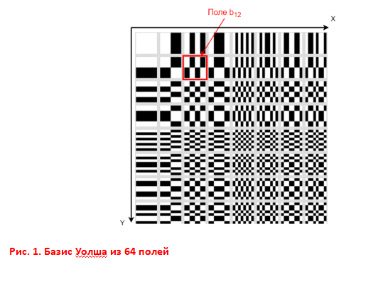
Наслаивая поля базиса друг на друга в стопку, можно получить любое сложное изображение размером 8×8
пикселей, суммируя накладываемые в столбиках друг на друга пиксели. При сложении каждый пиксель поля (белый цвет
соответствует числу 255, чёрный — 0) умножается на заранее вычисленный коэффициент — вес поля в изображении. Вес
поля указывает на его важность для получаемого изображения. Чем больше искомое изображение похоже на конкретное
поле из базиса Уолша, тем больше весовой коэффициент этого поля. Складывая все поля с их весовыми
коэффициентами, получают искомое изображение. На рис. 2 показана таблица из 64 коэффициентов некоторого
произвольного изображения и то, что получается при сложении полей с этими коэффициентами.
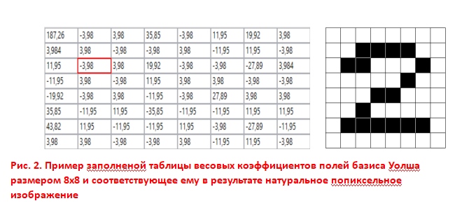
Инженерами разработан быстрый формальный способ разложения любого изображения в ряд Уолша и сборки его обратно.
Так как и приёмник, и передатчик графической информации имеют у себя таблицу полей Уолша (она всегда одна и та
же, рис.1), то вместо изображения передают ряд весовых коэффициентов. ИИ может, вычисляя и используя
коэффициенты Уолша, формировать любые растровые плоские изображения, смешивать их между собой с разными весами
(как это показано на рис. 3), определять сходство и различие разных изображений. Основные крупные единицы
изображения соответствуют первым (левый верхний угол базиса Уолша) полям ряда. Поля с высокими номерами (правый
нижний угол) передают более мелкие и малозначительные детали изображения (конечно, с поправкой значимости на
весовой коэффициент поля).
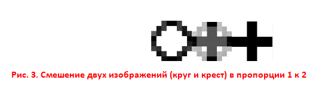
На рис. 4 показаны изображение из 2 048, 4 096, 8 192, 16 384 и 32 768 первых слагаемых базиса Уолша,
а на рис. 3 и 5 — смеси двух и более изображений.
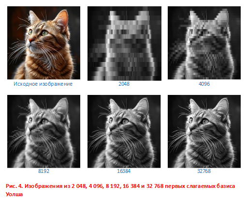
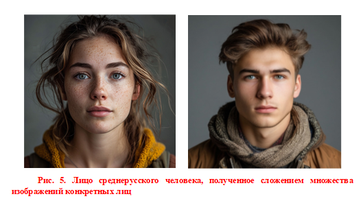
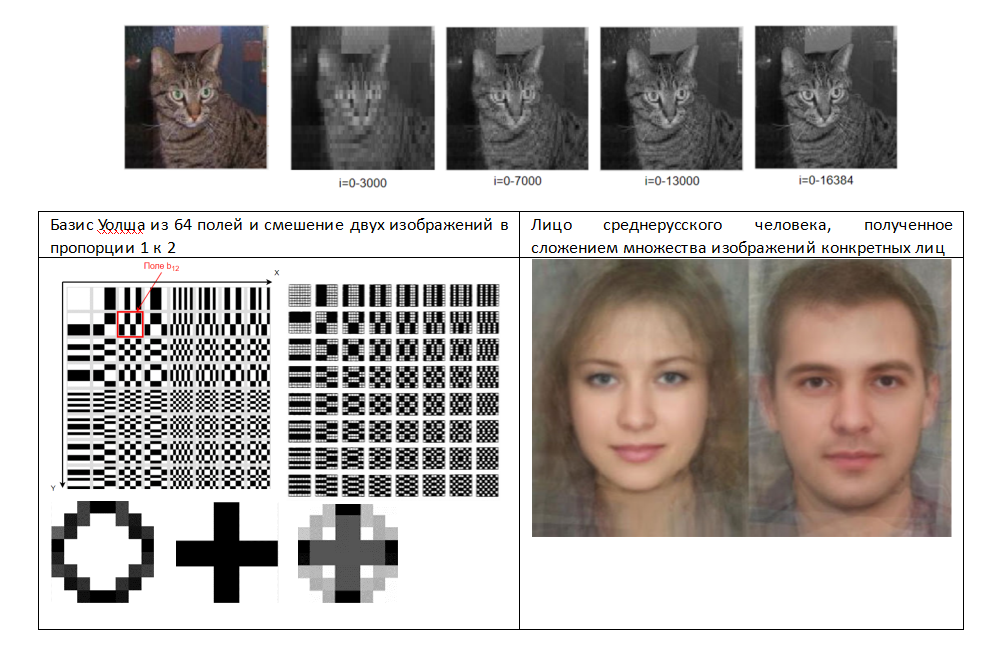
Задания
- Загрузите с сайта упражнения «Преобразования Уолша». Задавая различные веса нескольких полей базиса Уолша, добейтесь изображения кошки или стола
в качестве суммарного. Определите численно сходство и различие двух изображений.
- Загрузите картинку кошки или стола из интернета. Компьютер разложит ее на составляющие базиса Уолша. Рассмотрите веса полей базиса.
Какие поля являются более важными, а какие – менее? Выберите несколько слагаемых базиса с их вычисленными весами, посмотрите, какую часть исходной картинки
они образуют. Измените среди весов базиса Уолша вес отдельного поля и посмотрите, как изменится исходная картинка.
- Смешайте несколько изображений в одно, используя базис Уолша. Постепенно меняя пропорцию смешивания, рассмотрите как будет меняться результирующее изображение.
Пространственные отношения ключевых точек
С рождения наш мозг коллекционирует лица. Постепенно мы неосознанно формируем некоторый усреднённый шаблон, от
которого и отталкиваемся, когда пытаемся отличить одно лицо от другого. Распознавание лиц происходит в тот
момент, когда мозг сравнивает полученную картинку с внутренним шаблоном и находит характерные отличия: нос шире,
губы уже, кожа розоватая или золотистая. Самыми важными измерениями для программ распознавания лиц являются
расстояние между глазами, ширина ноздрей и длина носа, высота и форма скул, ширина подбородка, высота лба и т.
д. Разработчики программных продуктов выделяют 80, а иногда и 150 таких точек и расстояний между ними.
Координаты всех точек по порядку выписываются в ряд, который представляет собой функцию. Для сравнения двух лиц
надо сравнить между собой две функции на сходство и различие по выбранной заранее мере. Сегодняшняя точность
программ распознавания лиц — 97 %.
Набор параметров конкретного лица является уникальным для каждого человека. ИИ необходимо найти на изображении
изучаемого лица нужные точки, которые выдают перепады освещённости на рельефе лица, опознать их взаимное
расположение как элементы лица, связать их между собой — создать контур, вывести формулу этого контура и найти в
базе данных лиц ближайшую формулу по заданной мере. Возьмём изображение 5×5 пикселей, значения которых
варьируются от 0 (чёрный цвет) до 255 (белый цвет) — рис. 6.
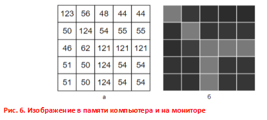
Изображение обрабатывается матрицами выделения горизонтальных и вертикальных частей контура, которые называют
фильтрами. С помощью фильтров обрабатывают изображение попиксельно, постепенно сдвигая матрицы по изображению
слева направо, а потом сверху вниз.
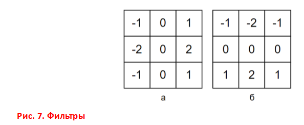
В нашем примере вычисление перепада освещённости в верхнем левом углу изображения на рис.6 по горизонтали
происходит следующим образом: , по вертикали: , где: Cx — значение перепада освещённости между соседними
пикселями по горизонтали, Cy — значение перепада освещённости между соседними пикселями по вертикали, g(x, y)
— средний перепад освещённости в области пикселя с координатами (x, y). Далее вычисляется средний перепад
освещённости: . В результате значение g (x, y)— вычисленный оттенок пикселя — изображается как часть контура.
Далее фильтры на изображении сдвигают вправо на один пиксель и операцию повторяют, как показано на рис. 8 (а —
вычисления в памяти компьютера, б — исходное изображение на мониторе и результат работы фильтра в виде контура
этого изображения): первое вычисление выделено красным цветом, зелёным — следующее, после смещения фильтра на
один пиксель вправо.
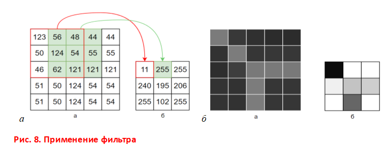
Когда фильтр доходит до крайнего правого положения, он возвращается обратно в крайнее левое со смещением вниз на
один пиксель, и так повторяется до обработки всего изображения. При вычислении контуров используют значение
порога, которое сравнивается со значением вычисленного перепада освещённости в каждом пикселе. Если перепад
оказывается ниже порогового значения, то он приравнивается нулю, в противном случае его значение не меняется.
Пример выделения контура изображения по перепадам освещённости изображен на рис. 9. При изменении значения
порога меняется результат — величина изменения освещённости для принятия решения о положении ключевых точек.
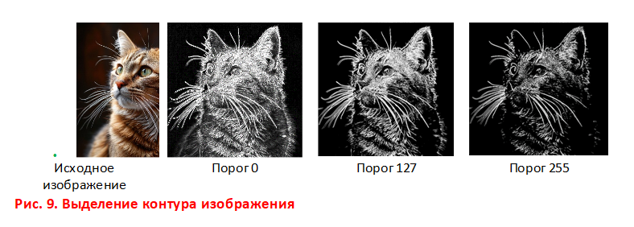
Пример 3. Пространственные отношения ключевых точек. С рождения наш мозг коллекционирует лица.
Постепенно мы неосознанно формируем некоторый усреднённый шаблон, от которого и отталкиваемся, когда пытаемся
отличить одно лицо от другого. Распознавание лиц происходит в тот момент, когда мозг сравнивает полученную
картинку с внутренним шаблоном и находит характерные отличия: нос шире, губы уже, кожа розоватая или золотистая.
Самыми важными измерениями для программ распознавания лиц являются расстояние между глазами, ширина ноздрей и
длина носа, высота и форма скул, ширина подбородка, высота лба и так далее. Кто-то выделяет 80, а кто-то 150
таких точек и расстояний между ними. Координаты всех точек по порядку выписываются в ряд, который представляет
собой функцию. Для сравнения двух лиц надо сравнить между собой две функции на сходство и различие по выбранной
заранее мере. Точность программ распознавания лиц — 97%.
Набор параметров конкретного лица является уникальным для каждого человека. ИИ необходимо найти
на изображении изучаемого лица нужные точки, которые выдают перепады освещённости на рельефе лица, опознать их
взаимное расположение как элементы лица, связать их между собой, вывести формулу лица и найти в базе данных лиц
ближайшую формулу по заданной мере.
Если на лицо в местах ключевых точек наклеить квадратики, вырезанные из блестящей фольги, и с помощью видеокамеры
отслеживать изменение их положения на лице, когда вы улыбаетесь или разговариваете, то, передавая эти координаты
в компьютерную модель, можно каждый раз заново отрисовать маску, например, животного. На экране возникнет
управляемый вашей мимикой цифровой двойник. Чем больше выбрать точек на лице, тем точнее маска передаст вашу
мимику.
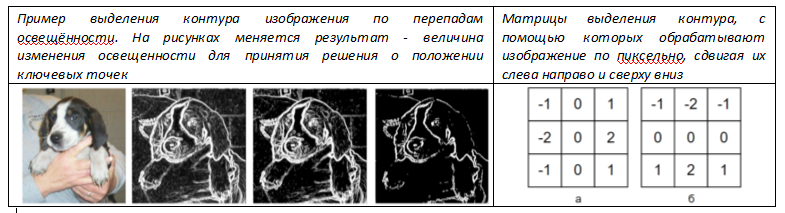